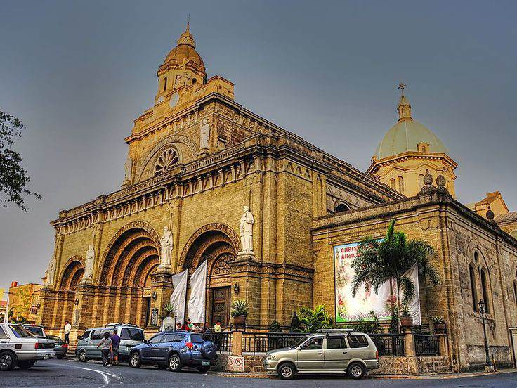

The Manila Cathedral is the most recent version of the long-standing Church of Manila. Built from 1954 to 1958 under the supervision of Filipino architect Fernando H. Ocampo, after the previous structure was flattened in the Second World War, it’s a masterpiece of architecture. Every detailed wall carving, door, panel, portal and even its attractive stained glass has its own story.
The Manila Cathedral, also known as the Cathedral Basilica of the Immaculate Conception, is one of the most iconic landmarks in Manila and a must-visit destination for tourists. Here are some of the things that make the Manila Cathedral a special place:
Rich History: The Manila Cathedral is one of the oldest churches in the Philippines, with a history dating back to the 16th century. It has been destroyed and rebuilt several times due to natural disasters and war, and each time it has been restored to its former glory.
Religious Significance: The Manila Cathedral is the seat of the Archbishop of Manila and is considered the mother church of the Philippines. It is a significant religious site for Catholics, as it has played an important role in the country's religious history.
Cultural Heritage: The Manila Cathedral is a symbol of the Philippines' cultural heritage and has played a significant role in the country's history. It has been the site of several important events, including the coronation of Spanish monarchs and the visit of Pope Francis in 2015.
Location: The Manila Cathedral is located in the heart of Intramuros, Manila's historic walled city. Its location makes it a great place to explore the surrounding area and learn more about Manila's rich cultural heritage.
Overall, the Manila Cathedral is a special place that offers visitors a glimpse into the Philippines' rich history and cultural heritage. Its impressive architecture, religious significance, and cultural significance make it a must-visit destination for anyone traveling to Manila.